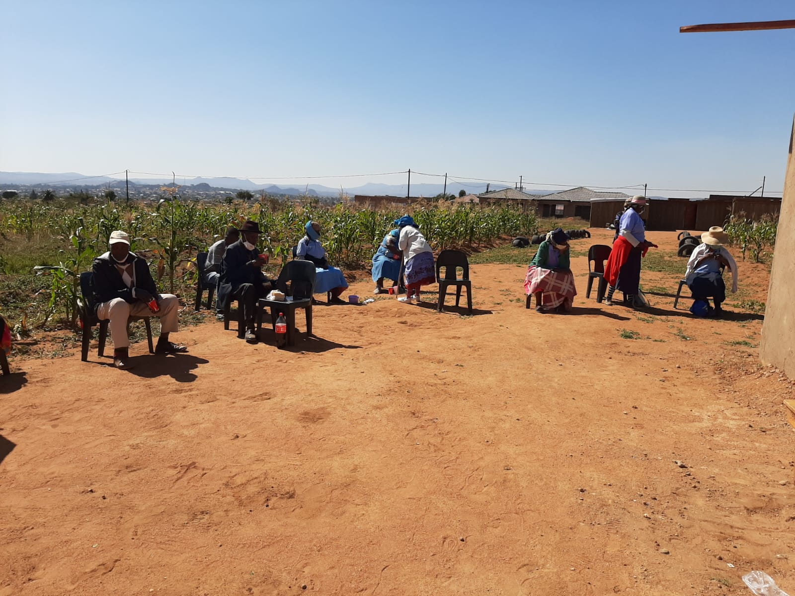
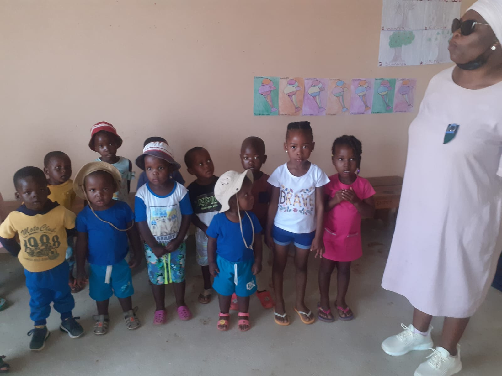
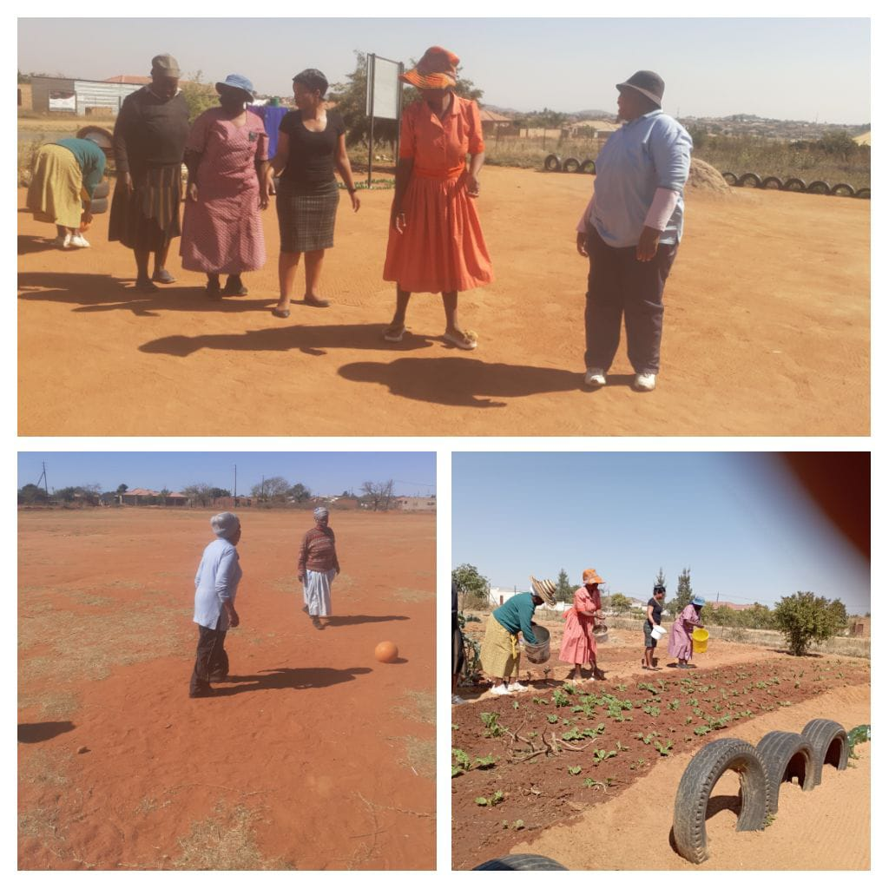

Our Operational Services & Programmes
Committed to creating a safe, caring, and supportive environment for elderly people and families in Ga-Mothapo. Explore our core programmes below.
1. Elderly Care and Support

Our primary focus is to provide compassionate care and support for elderly people. The planned Sephapose Old Age Care Centre will provide a safe and welcoming environment where seniors can feel respected, comfortable, and valued.
The centre supports the physical, emotional, and social wellbeing of elderly residents while encouraging dignity, independence, and active community participation.
Planned Elderly Care Services Include:
- Daily care and professional assistance
- A safe and comfortable living environment
- Social activities and companionship
- Wellness and recreational activities
- Support for families and caregivers
- Community activities for seniors
2. Sustainable Community Garden

Sephapose is actively involved in community gardening activities that encourage food production, active participation, and self-sustainability in Ga-Mothapo.
The community garden provides an opportunity for local community members and seniors to participate in growing nutritious food and learning about sustainable agriculture.
Community Garden Goals:
- Encourage local food production
- Promote sustainable gardening practices
- Support community participation and skill sharing
- Create opportunities for therapeutic gardening
- Improve food security within the Ga-Mothapo community
3. Community Day Care Centre

Sephapose has also supported the community through an early childhood day care initiative for young children.
The day care initiative is intended to provide children with a safe environment where they can learn, play, and interact with others while parents and guardians attend to daily responsibilities.
Planned Community Day Care Support Includes:
- A safe, supervised environment for children
- Early learning and educational activities
- Play and recreational equipment
- Social development and interaction
- Community support for working parents and guardians
4. Community Support and Outreach

Sephapose Old Age Care Centre believes that caring for elderly people is an integral part of building a stronger, more resilient community.
Through community outreach and social gatherings, we bring people together, provide vital support, and create opportunities for meaningful civic participation.
Our Community Support Activities Include:
- Community gatherings and wellness awareness
- Social support programs for vulnerable groups
- Volunteer placement and engagement
- Corporate and institutional partnership opportunities
Help Us Build a Better Future
We are looking for individuals, organisations, businesses, donors, and partners who share our vision and wish to support the development of our new care centre.
Make an Enquiry / Partner With Us